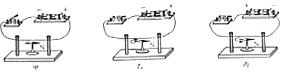
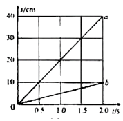

2019年北京市中考物理试题 · 选择题 第16、17、18、19、20题
16．（2分）下列说法中正确的是（ ）
A．一杯水和半杯水的比热容相等
B．0℃的水没有内能
C．液体在任何温度下都能蒸发
D．固体分子之间只存在引力
17．（2分）如图所示，小朋友沿滑梯下滑得越来越快。关于该过程，下列说法中正确的是（ ）
A．小朋友不具有惯性B．小朋友的运动状态不变
C．小朋友的动能增加D．小朋友的重力势能减少
18．（2分）某同学研究电流产生的磁场，闭合开关前，小磁针的指向如图甲所示；闭合开关，小磁针的偏转情况如图乙中箭头所示；只改变电流方向，再次进行实验，小磁针的偏转情况如图丙中箭头所示。下列结论中合理的是（ ）

A．由甲、乙两图可得电流可以产生磁场
B．由甲、乙两图可得电流产生的磁场的方向与电流方向有关
C．由乙、丙两图可得电流产生的磁场的强弱与电流大小有关
D．由乙、丙两图可得电流产生的磁场的方向与电流方向有关
19．（2分）下列说法中正确的是（ ）
A．风力发电机可以将机械能转化为电能
B．太阳能电池可以将太阳能转化为电能
C．电暖气正常工作时，主要是将电能转化为机械能
D．电风扇正常工作时，主要是将电能转化为机械能
20．（2分）某同学用滑轮组提升物体，绳子自由端竖直移动的距离随时间变化的关系如图中图线a所示，物体上升的高度随时间变化的关系如图中图线b所示。已知物体的质量为450g，所用动滑轮的质量为50g，绳子自由端的拉力F为1.3N，g取10N/kg。在0～2s的过程中，下列说法中正确的是（ ）

A．绳子自由端移动的速度为5.0cm/s
B．拉力F的功率为0.26W
C．有用功为0.45J
D．滑轮组的机械效率为90%